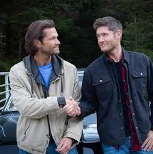

.png)
Tudo sobre Supernatural
Supernatural foi uma série de televisão estadunidense de fantasia sombria e urbana criada por Eric Kripke, produzida pela Warner Bros. Television em parceria com a Wonderland Sound and Vision, que estreou em 13 de setembro de 2005 na The WB Television Network, e depois tornou-se parte da programação da The CW, finalizando em 19 de novembro de 2020. A série narra a história de dois irmãos, Sam Winchester e Dean Winchester, interpretados respectivamente por Jared Padalecki e Jensen Ackles, que caçam demônios, fantasmas, monstros, vampiros e outras criaturas sobrenaturais no mundo.
Eric Kripke estava desenvolvendo Supernatural há quase dez anos; na sua ideia original, os Winchesters não existiam. A história se baseava em jornalistas que relatavam em suas notícias acontecimentos sobrenaturais. Como a The WB Television Network, emissora original do programa, não aprovou a ideia, Kripke reformulou o conceito da série e teve a aprovação. Os produtores executivos originais são Kripke, McG e Robert Singer (mesmo nome do personagem da série).
As filmagens ocorriam em Vancouver, no estado da Colúmbia Britânica, no Canadá. Seu episódio piloto foi visto por mais de 5,69 milhões de telespectadores, e o índice de audiência dos quatro primeiros episódios levou ao canal The WB produzir uma primeira temporada completa de 22 episódios. Originalmente, Kripke planejou a série para três temporadas, mas posteriormente expandiu para cinco. A quinta temporada, que estreou em 10 de setembro de 2009, encerrou o enredo principal da série; no entanto, devido ao aumento da audiência da quarta e da quinta temporada, a The CW decidiu continuar a exibição de Supernatural. Em 31 de janeiro de 2019, a emissora The CW renovou a série para uma décima quinta e última temporada, contando com 20 episódios.
A série chegou ao seu episódio final no dia 19 de novembro de 2020. A temporada final teve aceitação mista por parte do "fandom".
A série é até hoje a mais duradoura da The CW e a última série das extintas emissoras The WB e UPN a ser transmitida pela atual CW.
No Brasil, a série foi exibida de 2006 a 2018 pelo SBT e é reexibida desde então pelo canal pago Warner Channel.
Protagonistas
Para interpretar os dois personagens protagonistas de Supernatural, os irmãos Sam e Dean Winchester, a escolha deu-se aos atores Jared Padalecki e Jensen Ackles, respectivamente. Kripke queria o mais semelhante o possível a Luke Skywalker e Han Solo de Star Wars.
Padalecki conhecia os produtores executivos McG e David Nutter, os primeiros a convencê-lo para fazer um teste para o papel de Sam.[28] O ator tornou-se interessado no papel graças ao seu gosto por séries de terror, como The X-Files e Twilight Zone, que ele achou semelhante a Supernatural. Ele também estava animado para interpretar "o herói relutante", comparando Sam a personagens como Neo de Matrix e Luke Skywalker de Star Wars.
Local das filmagens
Embora o episódio piloto tenha sido filmado em Los Angeles, as filmagens principais tem lugar em Vancouver, na Columbia Britânica. Assim, as filmagens em locação geralmente ocorrem na área. O episódio "Dead in the Water" foi filmado no lago Buntzen, e as cenas finais do episódio "Simon Said" foram filmados na barragem Cleveland.[43] Outros locais utilizados em Supernatural são muitas vezes reutilizados duas ou três vezes, com o departamento de arte fazendo alterações para dissimular isso.[44] O parque Heritage em Burnaby tem sido usado como um cemitério no episódio "Red Sky at Morning", e como a localização da casa do pão de gengibre no episódio "Bedtime Stories". Além disso, o hospital Riverview em Coquitlam tem servido muitos cenários para a série, incluindo um asilo no episódio "Asylum", um hospital no episódio "In My Time of Dying", e uma prisão no episódio "Folsom Prison Blues". Por causa dos episódios ocorrerem geralmente no meio do nada, as filmagens realizam-se muitas vezes em uma antiga base militar. Depois de ter sido fechada por anos, os edifícios foram removidos, deixando apenas as estradas em que conjuntos são erguidos, como para cenas em encruzilhadas.